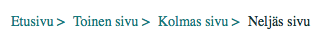

Nyt murupolkumme alkaa näyttää murupolulta:
Enää on jäljellä pienet hienosäädöt. Erotetaan viimeinen alkio murupolusta, jotta käyttäjälle tulee selkeämpi käsitys, millä sivulla hän on nyt. Asetetaan siis viimeiselle sivulle linkin väriksi jokin erilainen väri, esimerkiksi tummempi sävy. Viimeisen linkin ei tulisi olla klikattavissa käyttäjälle, koska hän on jo sivulla. Tässä tutoriaalissa viimeinenkin on säilytetty koodissa linkkimuodossa, mutta oikealla nettisivulla voi linkin korvata pelkällä tekstillä <li> -elementissä.
#viimeinen {
color: #14363A;
}
Seuraavaksi laitetaan kuntoon linkkien hover-ominaisuudet, eli kun käyttäjä vie hiiren linkin kohdalle, mitkä muutokset linkin tyylissä tapahtuu. Linkin fontin väri voi vaihtua, linkin alle tulla varjo tai vaikka fontin koko suurentua; mielikuvitus on vain rajana. Tehdään nyt kuitenkin ainoastaan maltillinen värin vaihto.
.murut li a:hover {
color: #1C9A9B;
}
Nyt murupolkumme on valmis!
Pienellä vaivalla saa tehtyä siistin ja yksinkertaisen murupolun ja sitä on helppo muokata erinäköiseksi tyylittelemällä lisää.
< Takaisin